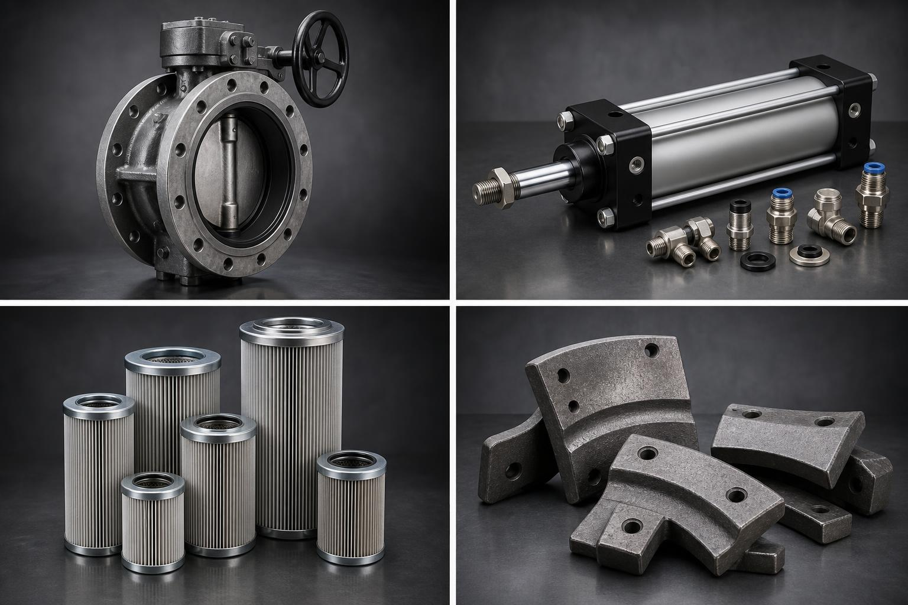
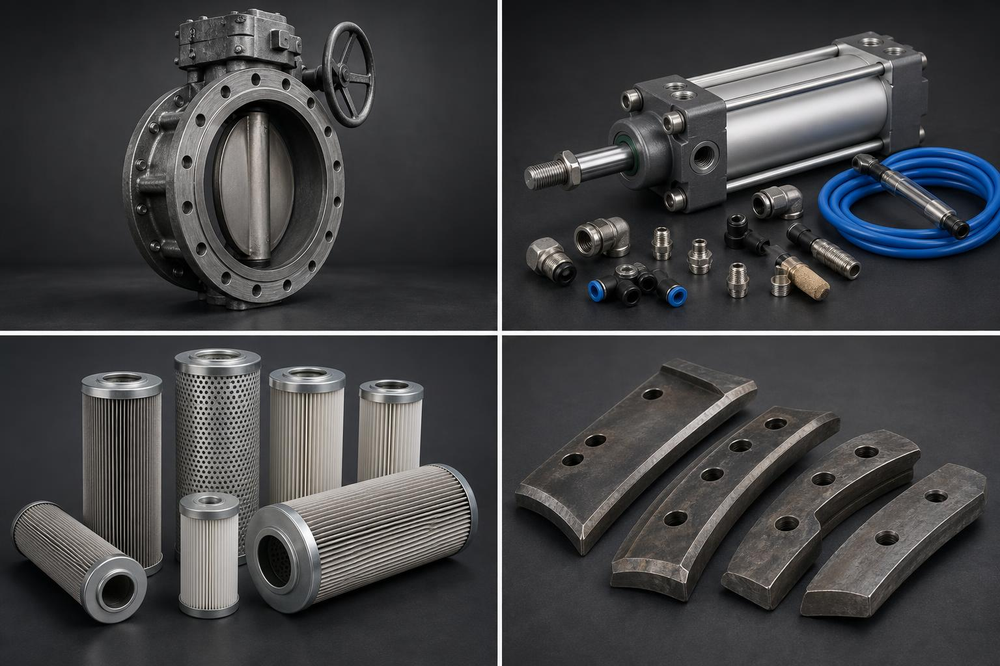
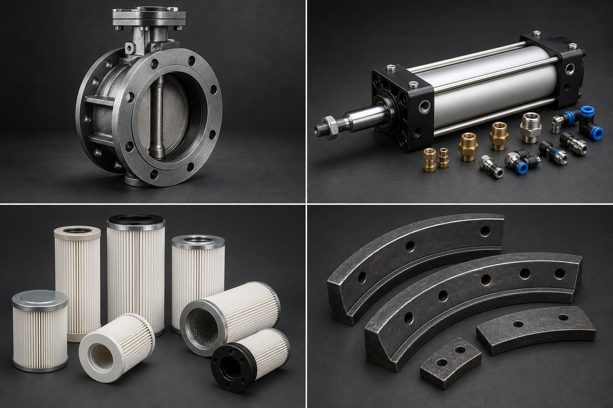

Срочный подбор
Завод стоит? Ищем деталь по фото и симптому.
Этот стиль не похож на унылый РФ-каталог. Он продаёт скорость реакции и ощущение диспетчерского центра.

URGENT RFQПневматика и фитингипоиск по фото, маркировке, узлу
Что предлагаем
AI/RFQ →
Затворы, приводы, ремкомплекты
Сценарий заявки
1 фото узла → 1 фото шильдика → КП
Для аварийного лендинга важнее не “красиво”, а чтобы человек в цеху за 20 секунд понял, что делать.
Срочно подобратьDemo-фото синтетические, не складское доказательство.